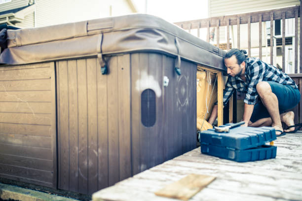

Tahoka Texas
info@fancyjacuzzirepair.pro
Tahoka Texas
info@fancyjacuzzirepair.pro

Keep your spa in perfect condition! Our Jacuzzi repair experts in Tahoka Texas provide high-quality solutions tailored to your needs. Reliable service, excellent customer care, and guaranteed satisfaction.
Click Here To Call Us (877) 848-1711Is your Jacuzzi not performing at its best? At Jacuzzi repair, we specialize in providing top-notch Jacuzzi repair services across Tahoka Texas . Whether it's a malfunctioning pump, a broken jet, or heating issues, our team of skilled technicians is here to restore your spa to perfect working condition.
We understand the importance of having a fully functioning Jacuzzi to help you relax and unwind. That’s why we use advanced diagnostic tools and high-quality parts to ensure long-lasting repairs. Our experienced team is trained to handle all Jacuzzi models and brands, offering comprehensive solutions that cater to your specific needs.
Why choose us? At Jacuzzi repair, we pride ourselves on fast, reliable service with customer satisfaction as our top priority. We also offer competitive pricing and flexible scheduling, so you can get back to enjoying your spa without breaking the bank.
Regular maintenance is key to extending the lifespan of your Jacuzzi. We provide preventative care services to keep your system running smoothly year-round. Whether you need a one-time repair or ongoing maintenance, we’re the trusted Jacuzzi repair experts in Tahoka Texas .
Don’t let a faulty Jacuzzi ruin your relaxation time. Call Jacuzzi repair today for reliable and affordable Jacuzzi repair services in Tahoka Texas !
Residential & commercial Jacuzzi repair
Quality services at affordable prices
Immediate 24/ 7 emergency services


Jacuzzis are a great way to relax and unwind, but like any mechanical system, they can experience issues over time. If you’re encountering problems with your hot tub or jacuzzi, it’s crucial to address them quickly to ensure optimal performance and safety. Here are some of the most common jacuzzi problems we fix in Tahoka Texas :
Water Not Heating
One of the most common issues is when the water fails to heat. This can be caused by a malfunctioning heater element or a faulty thermostat. Our expert technicians in Tahoka Texas can quickly diagnose the issue and restore your jacuzzi’s heating functionality.
Leaking Water
If your jacuzzi is leaking, it could be due to damaged pipes or seals. Water leakage can lead to significant damage, so it’s important to have it repaired immediately. Our team specializes in leak detection and sealing, ensuring your jacuzzi is water-tight.
Dirty or Cloudy Water
Cloudy water may indicate issues with your filter or water chemistry. We offer comprehensive cleaning services and water treatment, helping restore crystal-clear water, so you can enjoy a perfect soak.
Jets Not Working
Weak or non-functional jets can be caused by blockages or pump issues. Our professional repair services in Tahoka Texas will ensure your jets are working like new, providing you with the relaxing experience you expect.
If you’re facing any of these jacuzzi issues, don’t hesitate to contact our experts at Tahoka Texas . We offer fast, reliable, and professional jacuzzi repairs to get you back to relaxation quickly!
Residential & commercial Jacuzzi repair
Quality services at affordable prices
Immediate 24/ 7 emergency services
The plumbing system of your jacuzzi is essential for efficient water circulation and sanitation. If you notice leaks, inconsistent pressure, or water quality issues, it’s crucial to address plumbing problems promptly. Our jacuzzi plumbing repair and maintenance services in Tahoka Texas focus on diagnosing and solving plumbing issues effectively. From pipe repairs to valve replacements, our experienced technicians ensure your plumbing system is functioning optimally. Regular maintenance is key to preventing future plumbing problems, and our team is committed to keeping your jacuzzi in excellent condition.

Ensuring that your jacuzzi water is safe and enjoyable requires regular monitoring and balancing of chemicals. Imbalanced water can lead to skin irritations, eye infections, or equipment corrosion. Our water quality and chemical balancing services in Tahoka Texas provide thorough testing and adjustments of your spa’s water chemistry. We analyze pH levels, alkalinity, and sanitizer levels to ensure your hot tub water remains clear, safe, and inviting. By relying on our expertise, you can enjoy peace of mind knowing your water is perfectly balanced for relaxation.

Insulation plays a critical role in maintaining water temperature and energy efficiency in your Jacuzzi. If you’ve noticed inconsistent temperatures or rising energy bills, your insulation may need attention. At Jacuzzi repair, we specialize in Jacuzzi insulation repair and replacement, offering solutions that fit your needs and budget. With our services you can expect improved efficiency and lower costs in energy-related expenses, along with a consistently comfortable spa experience.

Seasonal changes can impact your jacuzzi’s performance, making regular maintenance essential. Our comprehensive maintenance and seasonal jacuzzi services in Tahoka Texas include everything from cleaning and water balancing to inspections and repairs. Our team is trained to identify potential issues before they become major problems, ensuring your spa remains a source of relaxation throughout the year. Whether you’re preparing for summer fun or winter hibernation, our seasonal services guarantee that your jacuzzi is ready for anything.
Preparing your Jacuzzi for winter is crucial to prevent damage from freezing temperatures. Our specialized winterization services include thorough draining, insulating, and protective maintenance to ensure your hot tub withstands the winter months safely. At Jacuzzi repair, we ensure that you can focus on enjoying your hot tub during the warmer seasons, knowing that it’s been properly protected during the colder months .
Regular maintenance and cleaning are essential to the longevity and enjoyment of your jacuzzi. Our team offers comprehensive Jacuzzi maintenance and cleaning services in Tahoka Texas covering everything from water testing and chemical balancing to thorough cleaning and inspections. By establishing a regular maintenance schedule, you can prevent larger issues and ensure optimal performance. Our expert team is committed to providing exceptional service, allowing you to enjoy a clean, safe, and inviting spa at all times.

Proper chemical treatment and water balancing are vital for a healthy hot tub experience. Incorrect chemical levels can harm users and damage the equipment. At Jacuzzi repair, we provide expert chemical treatment and water balancing services to ensure that your spa remains clean and safe for use. Our technicians conduct thorough evaluations and adjustments, leaving you relaxed and confident that your hot tub water is at its best .

Whether you’ve just installed a new jacuzzi or are bringing an existing one out of storage, proper start-up procedures are essential. Our jacuzzi start-up services include a thorough assessment of all systems, filling the tub, balancing the water, and ensuring all equipment is functioning correctly. During the start-up process, we provide valuable tips and advice for maintaining your spa, so you can enjoy it to the fullest. Trust our team to help you get started on the right foot, ensuring a safe and pleasurable hot tub experience.

Your spa cover is vital for energy conservation and maintaining water temperature. Damaged covers can lead to increased heating costs and debris in your jacuzzi. Our spa cover repair and replacement services focus on ensuring you have a secure, functional cover that’s easy to use. We assess the condition of your existing cover and recommend either repair or replacement. We offer a variety of high-quality covers suited for all types of spas, ensuring your investment is adequately protected. Let us provide you with a cover solution that enhances the functionality and safety of your jacuzzi.
Years Experience
Expert Technicians
Satisfied Clients
Compleate Projects
At Fancy Jacuzzi Repair, we understand that your jacuzzi is more than just a luxury—it’s a personal retreat. That's why we are committed to providing fast, reliable, and expert jacuzzi repair services across all cities in Tahoka Texas . Whether it’s an issue with the jets, heating system, or water circulation, our skilled technicians have the experience and tools necessary to restore your jacuzzi to perfect working condition.
Our team uses only the highest quality parts and advanced diagnostic tools to ensure your jacuzzi receives the best care possible. We pride ourselves on our transparent pricing and prompt, courteous service. With years of experience serving homeowners and businesses throughout Tahoka Texas we have earned a reputation for excellence and reliability.
Choosing Fancy Jacuzzi Repair means choosing a company that values customer satisfaction above all else. We work around your schedule and provide flexible, same-day repair services to minimize any disruption to your relaxation. From minor fixes to major repairs, we’re here to help you enjoy your jacuzzi again as soon as possible.
Our dedication to superior service and customer care sets us apart from other jacuzzi repair companies. With Fancy Jacuzzi Repair, you can rest easy knowing your jacuzzi is in the hands of true professionals. Call us today, and experience the best jacuzzi repair service in Tahoka Texas .
When your Jacuzzi is not performing at its best, one of the most common culprits can be the pump. A malfunctioning pump can lead to reduced water circulation, which in turn affects the efficiency of your hot tub experience. At Jacuzzi repair, we specialize in Jacuzzi pump repair, delivering expert solutions tailored to your model and situation. Our experienced technicians understand the intricacies of various Jacuzzi systems and are committed to restoring your spa to optimal working condition. We know that time is of the essence; hence, we provide fast and reliable service that keeps your water flow consistent and enjoyable.
The heater of your hot tub is crucial for maintaining the perfect water temperature, ensuring your relaxation and enjoyment. When your hot tub heater fails, it not only disrupts your soaking routine but can also lead to more extensive damages if not addressed promptly. Our experienced technicians at Jacuzzi repair offer swift and reliable hot tub heater repair services . We use cutting-edge diagnostic tools to identify issues quickly, from faulty thermostats to heating element failures. Our team is fully equipped to handle all types of hot tub heaters, providing repairs that last. Trust us to keep your hot tub toasty warm, allowing you to soak in comfort all year round. Choose Jacuzzi repair for top-tier hot tub heater repair services where quality and customer care come first.
Water loss in your Jacuzzi can lead to both structural and financial strain. If you suspect a leak, you need specialists who can not only identify but also effectively repair the leak to avoid further damage. With years of experience in Jacuzzi leak detection and repair, Jacuzzi repair offers a meticulous service designed to locate leaks swiftly and fix them correctly. Our team employs advanced methods and technologies to detect even the smallest issues, ensuring that your hot tub remains functional and efficient through every season .
The motor is a vital component of your jacuzzi’s operation. If you notice unusual sounds, a lack of power, or inconsistent performance, you might be facing motor issues. Our jacuzzi motor repair service focuses on restoring your motor to full functionality. Our qualified technicians perform thorough diagnostics to identify any underlying problems, including electrical issues and mechanical failures. We replace damaged parts with durable, high-performing ones, providing you with peace of mind and a reliable spa experience. Count on us to restore the efficiency of your jacuzzi motor and enhance your relaxation time.
Your jacuzzi jets provide the soothing massage and relaxation experience that you crave, but over time, they can wear out or become damaged. If you notice that your jets are malfunctioning or not producing adequate pressure, it’s essential to have them repaired or replaced promptly. At Jacuzzi repair, we specialize in jacuzzi jet repair and replacement, ensuring that you can enjoy a revitalizing soak whenever you desire. Our skilled technicians will assess your jets to determine whether they need simple repairs or full replacements, always using high-quality parts. With our commitment to service excellence and customer care, we guarantee that your jacuzzi will provide the ultimate relaxation experience once again. For effective jacuzzi jet repair and replacement, trust Jacuzzi repair .
The control panel is your connection to everything that makes your Jacuzzi enjoyable – adjustments to temperature, jets, lights, and more. Malfunctions can leave users frustrated and unable to enjoy their spa. At Jacuzzi repair, we offer specialized Jacuzzi control panel repair service, diagnosing and fixing issues quickly. Whether it's a simple fuse replacement or more complex circuit issues, we bring expertise to every call. Residents of Tahoka Texas can trust us to ensure their control panel is intuitive, timely, and efficient.
Inconsistent water pressure can significantly affect the performance of your jacuzzi, leading to a subpar depth of water, insufficient jet pressure, or even operational failure. At Jacuzzi repair, we specialize in diagnosing and repairing water pressure issues in jacuzzis. Our expert technicians utilize modern tools and techniques to identify the source of the problem quickly, whether it be clogged filters, broken pumps, or faulty valves. We provide actionable solutions designed to restore proper water circulation and pressure, ensuring your hot tub operates at peak performance. Trust Jacuzzi repair for effective water pressure issues repair services that deliver results you can rely on.
Electrical issues in a Jacuzzi can pose serious safety concerns and should be addressed immediately. At Jacuzzi repair, we offer expert troubleshooting and repair of all electrical components in your hot tub. Our licensed technicians evaluate wiring, connections, and circuits to ensure everything is working as it should. We prioritize safety in every repair we undertake and work meticulously to provide a resolution that guarantees peace of mind and spa enjoyment .
Proper water circulation is crucial for a clean and enjoyable hot tub experience. If you're facing water circulation issues, contaminants may build up, leading to an unclean environment. At Jacuzzi repair, we specialize in diagnosing and repairing hot tub water circulation problems, ensuring that your system works effectively and efficiently. Our team assesses filters, pumps, and plumbing to identify any hindrances to fluid movement. Reset the rhythm of your hot tub’s circulation with our expert services in Tahoka Texas .
Filters play a crucial role in keeping your jacuzzi water clean and safe for use. Over time, filters can become clogged or damaged, leading to inadequate filtration and poor water quality. Our jacuzzi spa filter replacement service is designed to ensure you have the right filters installed. We carry a wide selection of filters to fit any jacuzzi model, and our knowledgeable staff can help you choose the best option for your needs. Regular filter maintenance and replacement will prolong the life of your spa equipment, and our expert team is here to guide you every step of the way.
Not all jacuzzis are created equal, and some may require specialized repair expertise due to unique models or features. Our specialized jacuzzi repair services in Tahoka Texas cater to various jacuzzi systems, from high-end luxury models to standard residential units. Our technicians have the training and experience needed to handle unique components and specialized systems. Whether it’s a specialized jet system, advanced heating technology, or unique construction materials, our team is equipped to provide the repair and maintenance services your spa requires.
Ozone systems are an essential part of modern hot tub maintenance, providing an eco-friendly way to keep water clean. If your system is malfunctioning, it can lead to poor water quality and increased chemical usage. At Jacuzzi repair, we offer expert ozone system repair services, ensuring that your hot tub remains clean and efficient. Our knowledgeable technicians understand the importance of maintaining adequate levels of ozone to enjoy a healthy spa experience in Tahoka Texas .
To keep your hot tub looking and feeling new, consider resurfacing and reconditioning services. At Jacuzzi repair, we specialize in revitalizing aging hot tubs. Over time, wear and tear can lead to unsightly surface damage, but our expert team can bring your spa back to life. We use high-quality resurfacing materials that enhance both aesthetics and functionality. Our comprehensive process includes thorough cleaning, surface repairs, and protective coatings to extend the life of your hot tub. Choose us for our professionalism and quality craftsmanship, as we work diligently to restore the visual appeal and overall performance of your spa.
Keeping your Jacuzzi in optimal condition often requires recalibration and diagnostic services. At Jacuzzi repair, we offer thorough inspections and recalibration services to ensure that all components of your spa are functioning harmoniously. Our team utilizes advanced diagnostic tools to assess performance, pinpoint irregularities, and adjust settings accordingly. By trusting us with this important maintenance task, you can enjoy peace of mind knowing that your hot tub operates safely and efficiently. We pride ourselves on our commitment to quality and meticulous attention to detail, ensuring you get the most out of your investment.
An effective drainage system is vital for maintaining the cleanliness and hygiene of your hot tub. Blockages or leaks can lead to significant issues if not addressed promptly. Our jacuzzi drainage system repair service focuses on restoring proper drainage to prevent water pooling and damage. We assess the entire system, looking for blockages, damages, or improper installation. Our experienced technicians have the expertise to implement comprehensive repairs that restore the function of your drainage system and enhance the longevity of your jacuzzi while ensuring user safety.
The blower in your jacuzzi is responsible for creating those relaxing bubbles that enhance your soaking experience. If your jacuzzi is not producing bubbles or if the blower is making strange noises, it’s time for a repair or replacement. Our jacuzzi blower repair service in Tahoka Texas includes comprehensive diagnostics to identify the issue and restore normal functionality. We specialize in repairing existing blowers or providing high-quality replacements to ensure your spa continues to deliver the ultimate relaxation experience. Our fast, reliable service helps you get back to enjoying your hot tub quickly.
Proper lighting is an essential aspect of creating the perfect ambiance in your hot tub. If you encounter lighting issues, the comfort of your spa can be compromised. At Jacuzzi repair, we offer Jacuzzi lighting repair services that include diagnosing and fixing electrical and bulb-related problems. We aim for a thorough approach to restoring your spa’s atmosphere, ensuring functionality so that you can enjoy your Jacuzzi to its fullest potential, day or night, in the beautiful Tahoka Texas .
A damaged shell can compromise the integrity of your hot tub and diminish your enjoyment. At Jacuzzi repair, we specialize in hot tub shell repairs that restore both appearance and functionality. Our skilled technicians use advanced techniques to repair cracks, chips, and surface blemishes, ensuring your spa looks as good as new. We take pride in our craftsmanship, and our repairs are designed to last, helping you extend the life of your hot tub. Trust us to address your shell repair needs with professionalism and a customer-focused approach, ensuring you receive the quality service and results you deserve.
After a jacuzzi repair in Tahoka Texas maintaining its performance and longevity is crucial. Regular maintenance not only ensures your jacuzzi continues to work optimally but also prolongs its lifespan. Here’s a step-by-step guide to help you keep your jacuzzi in top condition after a repair.
1. Regular Water Testing and Balancing:
To keep your jacuzzi's water safe and clean, regularly test the water’s pH, alkalinity, and sanitizer levels. The proper balance prevents corrosion and scaling on both your jacuzzi’s components and the repair work done.
2. Clean Filters Often:
After a repair, it’s essential to keep the jacuzzi filters clean. Clogged filters can affect water circulation, strain the pump, and hinder the jacuzzi’s efficiency. Clean or replace filters as needed, usually every 3 to 6 months, depending on usage.
3. Maintain the Cover:
The jacuzzi cover plays a vital role in protecting your jacuzzi from debris and weather elements. Ensure the cover is in good condition after repairs and use a cover cleaner to remove any buildup. Keeping the cover intact ensures the jacuzzi's efficiency and reduces repair needs.
4. Check for Leaks:
Inspect your jacuzzi for any signs of leaks after a repair. Addressing leaks promptly will help prevent more extensive and expensive issues in the future.
By following these simple yet effective maintenance tips, you can ensure your jacuzzi remains in excellent condition long after the repair, offering you relaxation and comfort in Tahoka Texas .
Tahoka is a city in and the county seat of Lynn County, Texas, United States. The population was 2,673 at the 2010 census.
Circulation issues are often due to a clogged filter or pump malfunction. We can fix this efficiently in Tahoka Texas .
Our fast, reliable, and affordable services, combined with expert technicians, make us the top choice for Jacuzzi repairs in Tahoka Texas .
Loud noises may result from a faulty pump or motor. Our Tahoka Texas technicians can inspect and resolve the issue.
If your Jacuzzi water isn't heating or takes too long to heat, it may indicate a heater issue. Our experts can inspect and repair it promptly.
Repair costs in Tahoka Texas vary depending on the issue, but we provide competitive pricing and transparent quotes.
Whenever possible, we offer same-day repair services for urgent needs.
Yes, we can enhance your Jacuzzi with new jets, control systems, and other modern upgrades .
Fancy Jacuzzi Repair serves all neighborhoods and surrounding areas .
Contact Fancy Jacuzzi Repair immediately! Our team will troubleshoot and resolve the issue quickly.
Yes, we provide warranties on our repairs to ensure your satisfaction and peace of mind .
Most repairs are completed within 1-2 hours, but the timeline depends on the complexity of the issue.
Yes, we provide repair services for both residential and commercial Jacuzzi systems .
Yes, we use advanced tools to detect and repair Jacuzzi leaks efficiently .
Regular maintenance and prompt attention to small issues can prevent major repairs. We offer maintenance services in Tahoka Texas .
You can call us or book online to schedule your repair appointment .
Absolutely! Our repair services are fully insured for your protection.
Jacuzzi jets often stop working due to clogged filters, airlocks, or pump issues. Our team in Tahoka Texas can quickly diagnose and fix these problems.
Common issues include pump malfunctions, heater failures, leaks, and jet blockages, all of which we expertly handle in Tahoka Texas .
We accept various payment methods, including cash, credit cards, and online payments, for our services .
Fancy Jacuzzi Repair offers a wide range of Jacuzzi repair services including fixing leaks, pump and motor repairs, jet replacements, heater issues, and more.
Yes, all our technicians are certified and highly experienced in providing top-quality Jacuzzi repair services in Tahoka Texas .
Yes, we specialize in addressing water pressure issues to restore your Jacuzzi's functionality .
Yes, we are experienced in repairing or replacing faulty control panels for Jacuzzis in Tahoka Texas .
Absolutely! Fancy Jacuzzi Repair offers emergency repair services to address urgent issues and get your Jacuzzi running smoothly.
Yes, we specialize in repairing Jacuzzis of all makes, models, and ages across Tahoka Texas .
Yes, we offer free estimates for all Jacuzzi repairs to help you understand the scope and cost of the work.
Yes, we carry high-quality replacement parts to ensure durable and reliable repairs .
Regular maintenance every 3-6 months is recommended to keep your Jacuzzi in optimal condition. We offer maintenance plans .
Yes, we offer repair and replacement services for damaged Jacuzzi covers .
We pride ourselves on fast response times. In most cases, we can schedule your Jacuzzi repair within 24-48 hours.
The best jacuzzi repair service in Tahoka Texas ! Fancy Jacuzzi Repair did an outstanding job fixing my jacuzzi. They were prompt, professional, and the quality of work was excellent. Highly recommend!
Profession
Great experience with Fancy Jacuzzi Repair! They fixed my jacuzzi in no time, and the technician was very helpful. I’ll definitely call them again for any future repairs in Tahoka Texas
Profession
Fantastic service from start to finish! Fancy Jacuzzi Repair was prompt, friendly, and got my jacuzzi running again in no time. Highly recommend them to anyone in Tahoka Texas who needs professional jacuzzi repairs.
Profession
Tahoka TX Jacuzzi repair Pros
(877) 848-1711
info@fancyjacuzzirepair.pro
09.00 AM - 09.00 PM
09.00 AM - 12.00 PM